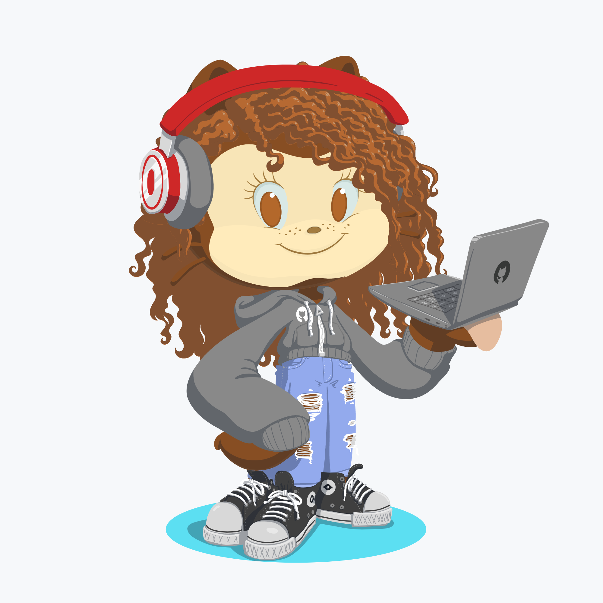
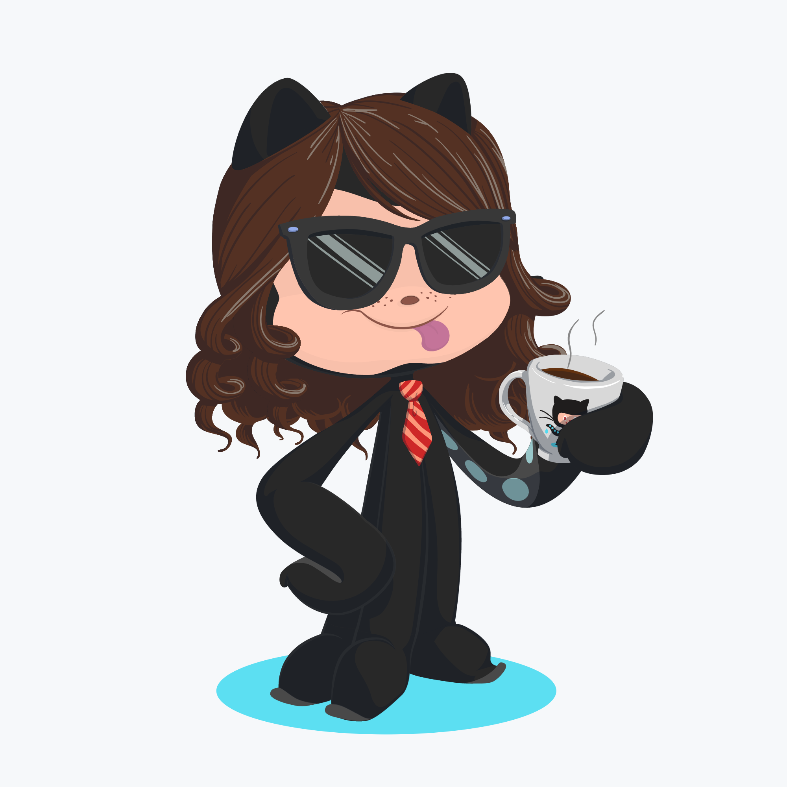
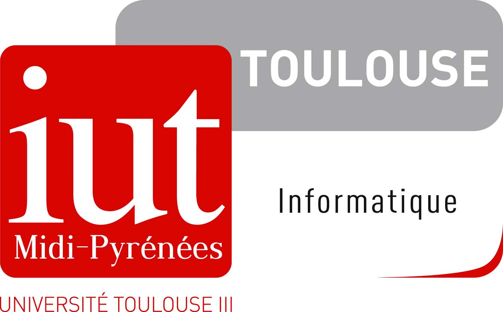

A PROPOS
Ce site est le fruit du travail d’un groupe de 4 étudiants scolarisés à l’IUT Paul Sabatier de
Toulouse :

Assala Drikra Lakhdar Barka
20 ans

Nicolas Rousseau
18 ans
Grâce à l’hétérogénéité de notre parcours scolaire, et par conséquent de nos connaissances, l’apport
de chacun a été d’une manière ou d’une autre matérialisé (ou plutôt « numérisé » dans le cas
présent) pour obtenir le rendu final que vous observez.
A PROPOS DU PROJET
« Neuralink » est une startup cofondée par l’entrepreneur et ingénieur sud-africain Elon Musk. Il
consiste en un composant électronique situé dans le cerveau, sur le crâne ou encore au niveau de la
moelle épinière qui permettrait, à terme, « l’amélioration » de l’Homme.
Dans un premier temps, ce composant devrait permettre aux personnes souffrant de handicap (notamment
de handicap moteur) de pouvoir recouvrer leur pleine capacité motrice.
La startup projette, après avoir réussi dans son objectif de pouvoir « soigner » différents
handicap, de pouvoir étendre le champ d’action du composant afin de permettre un accès moins
« spécialisé » et plus grand public (contrôler mentalement un ordinateur par exemple…).
NOTRE DEMARCHE
Notre démarche vis à vis de ce projet est à la fois informative, interrogative et « visionnaire ».
Tout d’abord informative car le projet n’est pas forcément connu du grand public et que sa
médiatisation est intervenue dans un contexte mondial imprévu qui a occupé la plupart de l’actualité
de 2019.
Une démarche interrogative car en effet, ce projet a soulevé beaucoup de questionnement à plusieurs
niveaux. Notre rôle ici est donc de rassembler différents questionnement liés aux différents
domaines où intervient le projet de développement de Neuralink (de la phase de développement à la
phase de commercialisation, en passant par la phase de test).
Et enfin une démarche visionnaire, futuriste. Cette partie « synthétise » sous la forme d’un récit
fictif nos questionnements sur le projet Neuralink. Afin d’éviter le plus possible d’apporter un
regard trop « biaisé » sur la question, nous avons tenu à ce que soit présentes une vision utopique
et dystopique.
SITE
Notre site s’articule autour de 4 principes : l’ergonomie, l’uniformité, le transhumanisme,
l’organisation. De l’entête jusqu’au pied de page, tout est réfléchi : L’ordre de la barre du menu,
les
couleurs, la police etc. . . Notre site garanti une navigation simple et pratique, nous l’avons
pensé afin qu’il n’y ait aucun problème de « surcharge visuelle ». Son thème étant Neuralink (donc
le transhumanisme), il renvoie à un concept plus ou moins futuriste, le design a donc été pensé à
cet effet. Enfin, il a été réalisé avec différents outils, principalement « Visual Code Studio » et
« GitHub Desktop ».
